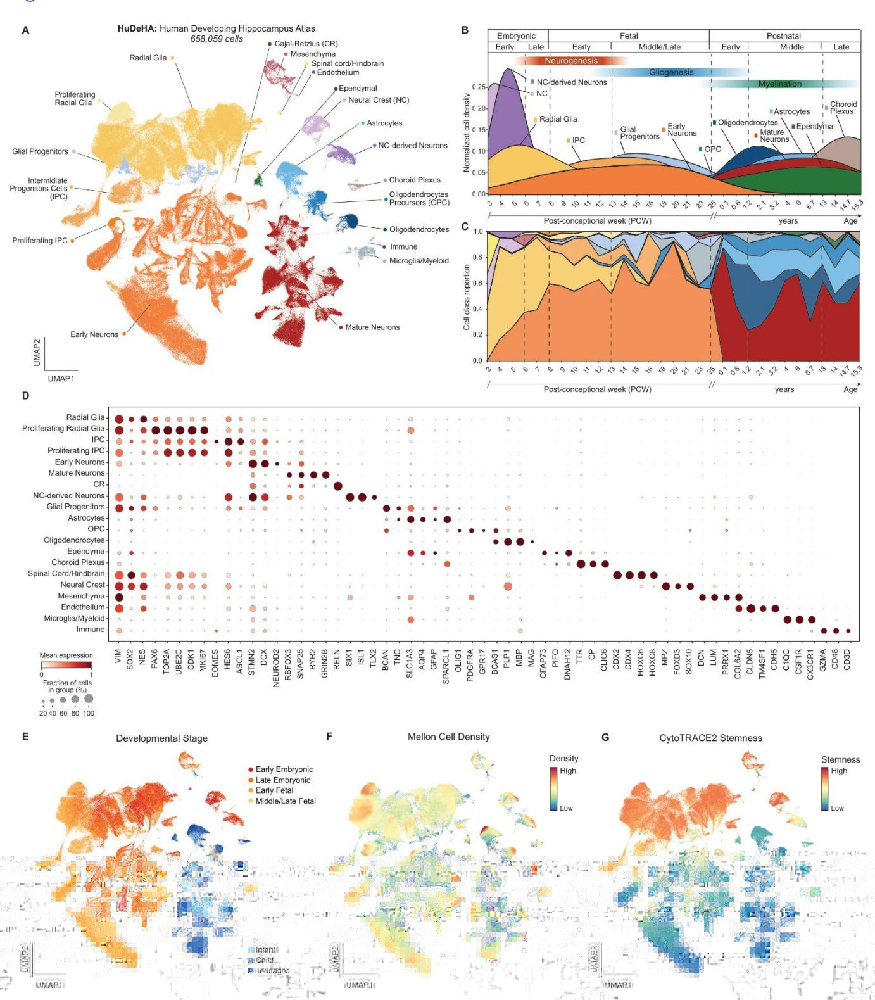
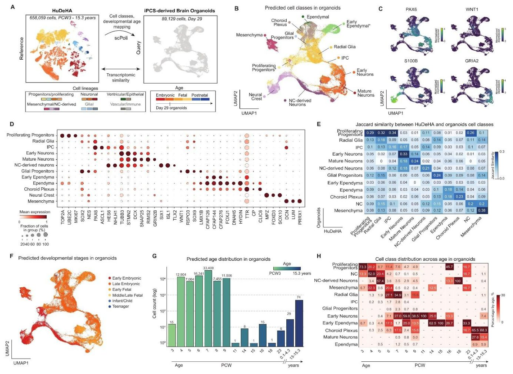
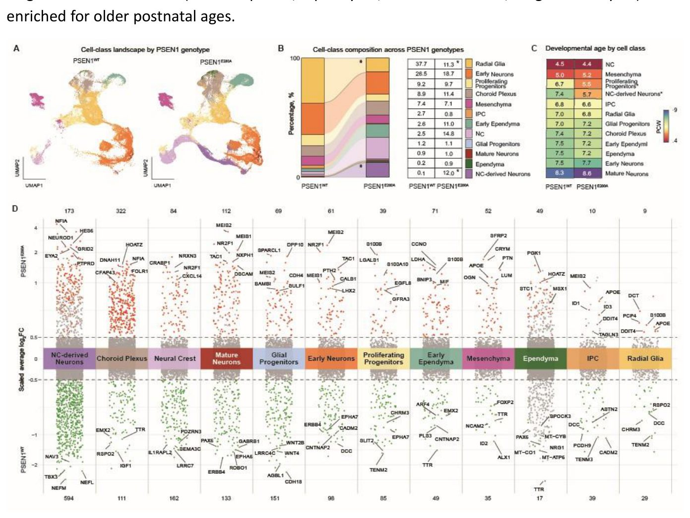
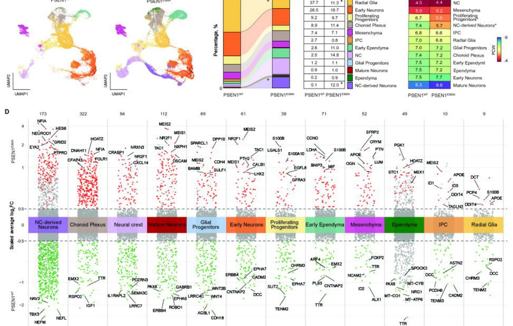
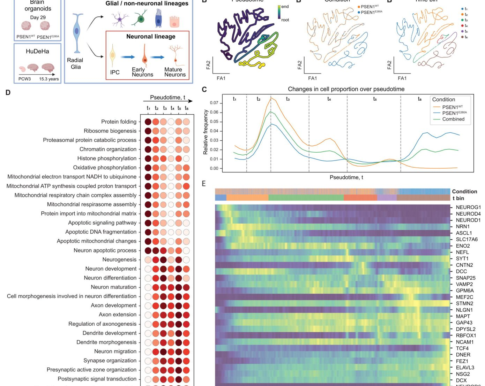
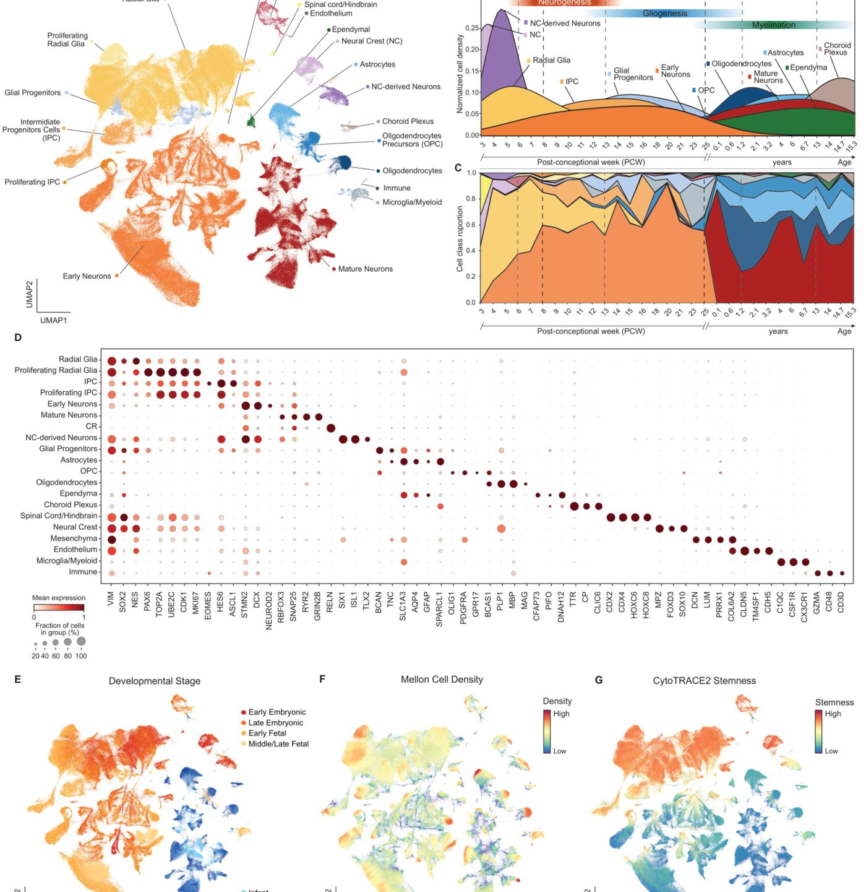
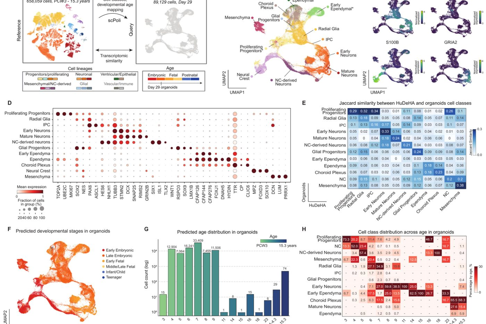

Inson gipokampusining rivojlanish xaritasi va Altsgeymer kasalligi
{kind=link}

Olimlar embrion davridan o‘smirlik yoshigacha bo‘lgan davrni qamrab oluvchi inson gipokampusining yagona hujayrali xaritasini yaratishdi. Uning yordamida oilaviy Altsgeymer kasalligini keltirib chiqaruvchi mutatsiyaga ega miya organoidlari o‘rganildi. Tahlillar hujayra tarkibining o‘zgargani va neyronlarning muddatidan oldin yetilganini ko‘rsatdi. Ushbu yangi ma'lumotlar bazasi laboratoriyada nevrologik kasalliklarni aniqroq modellashtirishga yordam beradi.
Maqolaning batafsil tahlili
Annotatsiya
Alzgeymer kasalligining oilaviy shakli (fAD) APP, PSEN1 yoki PSEN2 genlaridagi autosomal-dominant variantlar tufayli yuzaga keladigan kasallikning erta boshlanadigan turi bo'lib, bunda genetik jihatdan aniqlangan holatlarning aksariyati PSEN1 hissasiga to'g'ri keladi. Gipokampus kasallik paytida eng birinchi va eng og'ir zararlanadigan miya hududlaridan biridir. Odamning induksiyalangan pluripotent o'zak hujayralaridan (iPSC) olingan miya organoidlari inson miyasining erta rivojlanishining asosiy xususiyatlarini takrorlaydi va fAD mutatsiyalari neyrotaraqqiyot jarayonlarini qanday buzishini o'rganish uchun qulay modelni taqdim etadi. Biroq, ularning natijalarini talqin qilish turli protokollardagi hududiy o'xshashlikning turlicha ekanligi, yetilish darajasi va hujayra tarkibining turlicha bo'lishi sababli qiyinlashadi. Inson gipokampusi bo'yicha mavjud bo'lgan yakkaxujayrali tadqiqotlar prenatal va postnatal bosqichlarni qamrab oladi, lekin uzluksiz rivojlanish ma'lumotnomasini taqdim etmaydi. Yakkaxujayrali RNK sekvenlash ma'lumotlaridan foydalangan holda atlas yondashuvini qo'llagan holda, biz organoid hujayra sinfi, turi tarkibi va yetilish holatlari bo'yicha standartlashtirilgan ma'lumotlarga ega bo'ldik.
Biz Insonning rivojlanayotgan gipokampusi atlasini (HuDeHA) yaratdik; bu konseptsiyadan keyingi 3 haftadan 15,3 yoshgacha bo'lgan davrni qamrab oluvchi 658 059 ta hujayradan iborat integratsiyalangan yakkaxujayrali ma'lumotnoma bo'lib, uni yirik kolumbiyalik aholida fAD bilan bog'liq bo'lgan PSEN1E280A mutatsiyasini tashiydigan iPSC'dan olingan miya organoidlarini taqqoslash uchun ishlatdik. Ma'lumotnomaga asoslangan xaritalash PSEN1E280A organoidlarida o'zgargan hujayra tarkibini, jumladan radial gliyaning kamayishi va nerv qirrasidan kelib chiqqan neyronlarning ko'payishini aniqladi. Bu o'zgarishlar qatorlararo transkripsiya o'zgarishlari, jumladan ventral naqshlash omili MEIS2 ning keng miqyosda oshishi va xorioid plexus hamda ependimal bilan bog'liq populyatsiyalarda Aβ-bog'lovchi oqsil transtretin (TTR) ekspressiyasining kamayishi bilan birga kechdi. Rekonstruksiya qilingan neyronal qator trayektoriyalari PSEN1E280A organoidlarida yetuk holatlarga qarab siljish borligini ko'rsatdi.
Muhim
HuDeHA atlasi PSEN1E280A organoidlarida radial gliyaning kamayishi, nerv qirrasi neyronlarining ortishi, MEIS2 ning oshishi va TTR ning pasayishini, shuningdek yetuk holatga o'tishni aniqladi.
Ushbu topilmalar HuDeHA ni gipokampusga tegishli organoid tizimlarini rivojlanish jihatidan baholash uchun resurs sifatida belgilaydi va fAD dagi erta hujayra o'zgarishlarini tushunishga yordam beradigan PSEN1E280A organoidlaridagi hujayra-qatoriga xos o'zgarishlarni tavsiflaydi.
Natijalar
Human Developing Hippocampus Atlas (HuDeHA) pre- va postnatal davrlar kesimida asosiy hujayra sinflarini aniqlaydi
Tadqiqotchilar inson rivojlanayotgan gipokampi atlasini (HuDeHA) tuzdilar. Buning uchun jamoatchilikka ochiq bo'lgan scRNA-seq ma'lumotlar bazalaridan 107 ta partiya (batch) birlashtirilib, jami 658 059 ta hujayra qamrab olindi (1A-rasm; S1A, B-rasm; S1-jadval). Vaqt oralig'i embrionning erta bosqichlaridan, ya'ni homila rivojlanishining konsepsiyadan keyingi 3-haftasidan (PCW3) boshlab postnatal o'smirlik davrigacha (eng yoshi 15,3 yosh bo'lgan eng keksa postnatal namunalar) davom etdi. Annotatsiya qilingan populyatsiyalar neyron, glial, no-neyron, qon tomir va immun hujayra turlarini o'z ichiga olgan rivojlanish liniyalarining kutilgan xilma-xilligini namoyish etdi. Kanonik marker genlarga tayangan holda, mualliflar HuDeHA atlasida 20 ta asosiy hujayra sinfini aniqladilar (1D-rasm).
Neyroektodermal chiziqlar neyronal differensiallanish kontiniumini hosil qildi. Ular VIM, SOX2 va NES ekspresse qiluvchi 194 105 ta hujayradan iborat radial glia hamda TOP2A, MKI67, UBE2C va CDK1 ga boy bo'lgan proliferatsiyalanuvchi radial glia (11 390 ta hujayra) bilan boshlandi. Bular o'z navbatida EOMES va ASCL1 bilan belgilanadigan oraliq o'tmishdosh hujayralarga (IPC; 15 033 ta hujayra) hamda proliferatsiyalanuvchi IPC larga (3860 ta hujayra) o'tdi. O'z navbatida, ular DCX, NEUROD2 va ELAVL3 ekspresse qiluvchi erta neyronlarni (246 627 ta hujayra) hamda postmitotik va sinaptik genlar bo'lgan RBFOX3, SNAP25 va SYT1 ga boy bo'lgan ko'proq differensiallashgan neyronlarni (95 335 ta hujayra) hosil qildi. Cajal-Retzius (CR) neyronlarining kichik populyatsiyasi (170 ta hujayra) yuqori RELN ekspressiyasi bilan ajralib turdi. Glial liniya BCAN va TNC ekspresse qiluvchi glial o'tmishdoshlarni (8536 ta hujayra) o'z ichiga oldi; ular VIM va SOX2 ekspressiyasi bo'yicha radial glia bilan qisman kesishib, o'tish davri xususiyatiga ega ekanligini ko'rsatdi. Yetukroq glial populyatsiyalar oligodendrotsitlarning o'tmishdoshlari (OPC; 11 483 ta hujayra; OLIG1 va PDGFRA), oligodendrotsitlar (7908 ta hujayra; PLP1 va MBP) hamda astrositlar (15 701 ta hujayra; GFAP va AQP4) kabi aniq ajralgan klasterlarni hosil qildi. Qo'shimcha neyroektodermal populyatsiyalarga ependimal hujayralar (2200 ta hujayra; PIFO) va xoroid plexus hujayralari (2119 ta hujayra; TTR), shuningdek, nerv taroqi (NC) hujayralari (10 036 ta hujayra; SOX10 va MPZ) hamda nerv taroqidan kelib chiqqan neyronlarni (6302 ta hujayra; ISL1 va SIX1) o'z ichiga olgan nerv taroqi chizig'i kiradi.
Izoh
> scRNA-seq — yagona hujayralar RNKsini sekvenirlash usuli bo'lib, u har bir alohida hujayradagi gen ekspressiyasini batafsil o'rganish va kam uchraydigan hujayra turlarini aniqlash imkonini beradi.
Noektodermal populyatsiyalarga mezodermadan kelib chiqqan mesenxima (8052 ta hujayra; DCN), endoteliy (228 ta hujayra; CLDN5), mikroglia (4876 ta hujayra; CX3CR1) va boshqa immun hujayralarning kichikroq populyatsiyasi (160 ta hujayra; CD3D) kirdi. Shuningdek, orqa miya / miya ustuni bilan bog'liq bo'lgan kichik populyatsiya (480 ta hujayra; CDX2 va CDX4) kuzatildi (1D-rasm). Keyinchalik olimlar hujayra tarkibi va yetuklik darajasi PCW3 dan 15,3 yilgacha bo'lgan butun atlas vaqt shkalasi bo'yicha qanday o'zgarishini hujayra sinflari proporsional zichligi hamda umumiy ulush dinamikasini vizualizatsiya qilish orqali o'rganib chiqdilar (1B, C-rasm; S1D-rasm). Bu dinamika shuni ko'rsatdiki, erta embrional namunalar radial glia va nerv taroqi populyatsiyalariga boy, keyingi prenatal bosqichlarda esa radial glialarning nisbatan kamayishi, erta neyron populyatsiyalarining kengayishi va glial o'tmishdosh holatlarining paydo bo'lishi kuzatiladi, bu esa erta neyrogenezdan gliogen dasturlarga o'tishga mos keladi. Postnatal namunalar yetuk neyronlar va differensiallashgan glial populyatsiyalar, jumladan astrositlar va oligodendrotsitlar liniyasi hujayralari bilan boyigan. Nerv taroqi va undan kelib chiqqan neyronlar asosan erta embrional bosqichlarda kuzatiladi.
Muhim
> HuDeHA atlasi 658 059 ta hujayrani 20 ta asosiy sinfga birlashtirib, prenatal davrdagi radial gliadan postnatal davrdagi yetuk neyronlar va gliagacha bo'lgan hujayra almashinuvini ko'rsatdi.
Namunalarning donor yoshi rivojlanish bosqichlariga bo'linib, hujayra populyatsiyalari bo'ylab tarqalishini ko'rsatish uchun embaddinga proyeksiya qilindi (1E-rasm, S1D-rasm). Mellon asosidagi hujayra zichligini baholash asosiy populyatsiyalarga mos keluvchi zich namuna olingan hududlarni hamda glial o'tmishdoshlar kabi kamroq uchraydigan yoki o'tish davridagi holatlarga mos keluvchi siyrakroq hududlarni ajratib ko'rsatdi (1F-rasm). Rivojlanish potensialini bevosita baholash uchun mualliflar CytoTRACE2 potensial ballini hisobladilar (1G-rasm; S1C-rasm). Neyronal liniya bo'ylab rivojlanish potensiali proliferatsiyalanuvchi o'tmishdoshlar va radial gliadan (CytoTRACE2 median ballari mos ravishda 0,57 va 0,57) IPC lar orqali (0,43) erta va yetuk neyronlargacha (mos ravishda 0,09 va 0,05) bosqichma-bosqich pasayib bordi, bu neyronal differensiallanish davrida rivojlanish salohiyatining bosqichma-bosqich yo'qolishiga mos keladi. Nerv taroqi, mesenxima va orqa miya/miya ustuni hujayralarini o'z ichiga olgan boshqa o'tmishdoshsimon populyatsiyalar yuqori potensial ballarini ko'rsatdi. Aksincha, oligodendrotsitlar, astrositlar va ependimal hujayralarni o'z ichiga olgan postnatal davr bilan bog'liq differensiallashgan populyatsiyalar eng past potensial ballarini namoyish etdi.
HuDeHA fAD organoidlari ma'lumotlarini referensga asoslangan holda xaritalash imkonini beradi
Induktiv plyuripotent o'zak hujayralaridan (iPSC) olingan miya organoidlari ma'lumotlar to'plami Perez-Corredor va boshq. [18] ishidan olingan bo'lib, PSEN1 va APOE statusi bo'yicha aniqlangan to'rtta genotip guruhini o'z ichiga olgan: PSEN1WT/APOEWT, PSEN1WT/APOEChristchurch (APOECh), PSEN1E280A/APOEWT va PSEN1E280A/APOECh. Ma'lumotlar to'plami ikkita donor iPSC fonidan kelib chiqqan sakkizta CRISPR xujayra liniyasidan hosil qilingan sakkizta scRNA-seq kutubxonasini o'z ichiga olgan bo'lib, sekvense qilishdan oldin har bir hujayra liniyasi uchun oltita organoid birlashtirilgan. Mualliflar scPoli [19] usulini qo'lladilar; bu referens va so'rov hujayralari o'rtasida umumiy yashirin tasvirni o'rganadigan va referensga asoslangan hujayra sinfi yorliqlarini so'rov ma'lumotlar to'plamiga o'tkazadigan yarim nazorat ostidagi neyron tarmoqqa asoslangan referens xaritalash tizimidir (2A-rasm). Model HuDeHA referensida o'qitildi va keyinchalik miya organoidlaridagi hujayralarni izohlash uchun ishlatildi. Ushbu yondashuv progenitorlar, neyronlar, epitelial/ventrikulyar, mezensim va NCdan kelib chiqqan nasllarni aniqladi (2B-rasm). Bu bosqichda differensiatsiyalashgan glial yoki immit/vaskulyar populyatsiyalar aniqlanmadi. Neyron nasl ichida oraliq progenitor hujayralar (IPCs), shuningdek, erta va yetuk neyronlar aniqlandi, garchi ular sezilarli darajada turlicha nisbatlarni tashkil etgan bo'lsa ham: erta neyronlar (19 131 hujayra) va radial gliya (18 384 hujayra) ustunlik qildi, holbuki IPCs (1308 hujayra) va yetuk neyronlar (877 hujayra) faqat kichik populyatsiyalarni tashkil etdi. IPC populyatsiyasi ASCL1 va HES6 ni ekspress qildi, bu erta neyrogen oraliq holatga mos keladi, EOMES esa hujayralarning <1% qismida aniqlandi. Erta neyronlar TUBB3, STMN2 va DCX ni kuchli ekspress qildi, yetuk neyronlar esa GRIN2B va GRIA2 ni ekspress qildi (2C, D-rasm). Kuchli S100B signali kuzatildi va asosan NC kompartmentiga xaritalandi (2B, C-rasm), bu ham MPZ, FOXD3 va SOX10 ni ekspress qildi (2D-rasm) hamda ependimal hujayralarga qo'shimcha xaritalash kuzatildi.
Izoh
> scPoli — bu neyron tarmoqlarga asoslangan mashinaviy o'qitish usuli bo'lib, u allaqachon ma'lum bo'lgan biologik atlasdagi (referensdagi) hujayra belgilari haqidagi ma'lumotlarni yangi eksperimental ma'lumotlarga ko'chirish imkonini beradi.
Model umumiy jihatdan past izohlash-noaniqlik ballarini ko'rsatgan bo'lsa-da, ependima, glial progenitorlar va xoroid pleksus kabi ba'zi populyatsiyalar nisbatan yuqori noaniqlikni ko'rsatdi (S2A-rasm). Tadqiqotchilar organoidlar ma'lumotlar to'plamining muqobil joylashuvi bilan birga kanonik markerlarni o'rgandilar. Tahlil HuDeHA da aniq o'xshashiga ega bo'lmagan, CFAP126, CFAP144, CFAP276, CFAP141 va CFAP90 ni ekspress qiluvchi alohida CFAPga boy populyatsiyani aniqladi (S2B-rasm). Shuning uchun biz ushbu populyatsiyani organoidga xos sinf sifatida qo'shdik va uni erta ependima deb belgiladik. Ushbu hujayralar FOXJ1 va qisman kiprik hosil qilish dasturini ekspress qildi, ammo bir nechta asosiy aksonemal dinein va kiprik yig'ish genlariga ega emas edi. Ependimaga o'xshash hujayralar shuningdek, ventrikulyar epitelial differensiatsiyaning to'liq emasligiga mos keladigan xoroid pleksus markerlari bilan qisman bir-biriga mos kelishini ko'rsatdi. Glial progenitor populyatsiyasi tomi plastinkasiga / dorsal o'rta chiziq progenitor markerlariga, jumladan LMX1A/B, MSX1, GDF7 ga boyishini ko'rsatdi (S2C-rasm). WNT oilasiga mansub genlar ekspresiyasi ushbu populyatsiyada WNT1/3A uchun tanlangan musbatlikni yanada ta'kidladi (2C-rasm, S2C-rasm). Aksincha, in vivo bir nechta kanonik glial progenitor markerlari, jumladan TNC, BCAN va NFIB organoidlarda zaif ekspress qilingan yoki yo'q edi (S2D-rasm). Radial gliya ham bashorat qilish ishonchliligining pasayishini ko'rsatdi (S2A-rasm), bu ehtimol organoidlardagi geterogen radial gliya holatlarini aks ettiradi; bu hujayralar SOX2 va NES kabi asosiy radial gliya markerlarini ekspress qildi, shu bilan birga glial progenitorlar bilan bog'liq genlar uchun qisman boyishni ko'rsatdi.
Muhim
> HuDeHA yordamida integratsiya organoidlarda erta neyronlar (19 131 hujayra) va radial gliya (18 384 hujayra) ustunligini aniqladi hamda boshlang'ich referensda bo'lmagan CFAP va FOXJ1 genlariga boy erta ependima populyatsiyasini ajratib ko'rsatishga imkon berdi.
In vivo va organoid hujayra sinflari orasidagi o'xshashlikni scPoli asosidagi izohdan qat'i nazar baholash uchun mualliflar ikkita bir-birini to'ldiruvchi o'lchovni hisobladilar: Jakkard o'xshashligi va Pirson korrelyatsiyasi. Har bir hujayra sinfi uchun eng yaxshi 1500 differensial ekspress qilingan genlar (DEG) yordamida hisoblangan Jakkard o'xshashligi HuDeHA va miya organoidlaridagi sinfga xos marker-gen dasturlari orasidagi o'xshashlikni miqdoriy baholadi (2E-rasm, S3A-C-rasm). Eng kuchli muvofiqlik organoidlar va referens atlas o'rtasida eng yuqori mos keladigan o'xshashlikni ko'rsatgan mezensim hujayralari uchun kuzatildi (Jakkard = 0.38). Erta neyronlar ham o'zlarining mos keladigan referens populyatsiyasi bilan aniq transkripsion o'xshashlikni ko'rsatdi (Jakkard = 0.32), bu organoidlarda asosiy neyron identligining saqlanib qolishini qo'llab-quvvatlaydi. Progenitorlar bilan bog'liq bir nechta populyatsiyalar qat'iy birma-bir mos kelishdan ko'ra kengroq sinflararo o'xshashlikni ko'rsatdi. Misol uchun, proliferatsiyalanuvchi progenitorlar organoidlardagi radial gliya va proliferatsiyalanuvchi progenitorlar bilan o'xshashlikni ko'rsatdi (mos ravishda Jakkard = 0.32 va 0.29), bu umumiy proliferativ va neyrogen marker dasturlariga mos keladi. Erta ependima populyatsiyasi barcha referens sinflar uchun bir xilda past o'xshashlikni ko'rsatdi, bu uning rivojlanayotgan gipokampal atlasida yaxshi ifodalanmagan organoidda boyitilgan yoki atipik populyatsiya sifatida tasniflanishini qo'llab-quvvatlaydi. O'ziga xoslik nazorati sifatida biz organoidlarda bashorat qilinmagan referens populyatsiyalarni, jumladan astrositlar, OPC lar, oligodendrotsitlar va mikrogliyani kiritdik va hech qanday organoid populyatsiyasiga kuchli o'xshashlikni kuzatmadik (S3B-rasm). Turli xil genlar to'plamlari bo'yicha Pirson, Spirmen va Kendall muvofiqligiga asoslangan qo'shimcha tahlillar ham xuddi shu naqshni qo'llab-quvvatladi (S3D-F-rasm). Mezensim hujayralari va erta neyronlar referens atlasiga eng yuqori transkripsion o'xshashlikni ko'rsatdi, holbuki ependima, xoroid pleksus va erta ependima populyatsiyalari pastroq yoki o'zgaruvchan o'xshashlikni ko'rsatdi, bu ushbu organoid holatlarining in vivo referensidan qisman farq qilishiga mos keladi.
Ehtiyot bo'ling
> Transkripsion profillarni taqqoslash organoidlardagi hujayra holatlari va in vivo referens o'rtasida, xususan ependimal va vaskulyar populyatsiyalar uchun qisman tafovut borligini aniqladi, bu in vitro sharoitida ularning fenotiplari to'liq takrorlanmasligini ko'rsatadi.
Mualliflar fAD organoidlar to'plamida rivojlanish bosqichining o'xshashligini bashorat qilish uchun HuDeHA yosh annotatsiyalariga tayangan holda scPoli algoritmidan foydalandilar (2F-rasm). Bashorat qilingan holatlar erta prenatal bosqichlardan tortib postnatal davrlargacha bo'lgan diapazonni qamrab oldi va joylashuv fazosida yoshga bog'liq o'rtacha tashkil etilganlikni ko'rsatdi (2G-rasm). Organoid hujayralarining aksariyati erta prenatal bosqichlarga, jumladan PCW4–PCW9 oralig'iga to'g'ri keldi, taxminan 1% hujayralar esa PCW11 va undan keyingi bosqichlarga, shu jumladan postnatal yoshga mansub bo'ldi. Har bir annotatsiya qilingan hujayra sinfi doirasida yosh guruhlariga ajratilgan hujayralar ulushi hisoblanib, issiqlik xaritasi shaklida vizualizatsiya qilindi (2H-rasm). Olingan taqsimot kutilgan rivojlanish mantiqiga mos keldi: erta bashorat qilingan yoshlar progenitorga o'xshash va neyron bo'lmagan populyatsiyalarda (proliferatsiyalanuvchi progenitorlar, mezenximal hujayralar va neyron tizma hujayralari) ko'proq uchradi, keyingi va postnatal yoshlar esa yetuk neyronlar va ependimalarga o'xshash differensiatsiyalashgan populyatsiyalarda to'plandi.
PSEN1E280A organoidlari hujayra sinfi tarkibi va transkripsion profillari bo'yicha farqlanadi
Keyinchalik tadqiqotchilar PSEN1E280A organoidlarida PSEN1WT organoidlariga nisbatan asosiy hujayra turlari tarkibida o'zgarishlar bor-yo'qligini tekshirdilar (3A-B-rasm). Har bir organoid uchun hujayra sinfi proporsiyalari miqdoriy jihatdan baholandi va bitta hujayrali hisob ma'lumotlarini qiyosiy tahlil qilish uchun Bayescha freymvork bo'lgan scCODA yordamida statistik tahlil qilindi (3B-rasm). Bu tahlil mutant organoidlarda WT ga nisbatan neyron tizma hujayralaridan kelib chiqqan neyronlarning ishonchli darajada ko'payganini va radial glialarning kamayganini ko'rsatdi. Har bir hujayra sinfida bashorat qilingan yosh tahlil qilindi (3C-rasm). Bashorat qilingan yoshlar taqsimoti bo'yicha Cliff’s delta qiymatlari hisoblanganda, PSEN1E280A organoidlaridagi proliferatsiyalanuvchi progenitorlar va neyron tizma neyronlari WT ga nisbatan yoshroq yoshni ko'rsatdi (mos ravishda 5.5 va 6.7 PCW hamda 5.7 va 7.4 PCW), qolgan sinflarda esa farqlar juda oz bo'ldi.
Muhim
PSEN1E280A mutant organoidlari progenitorlar (5.5 va 6.7 PCW) va neyron tizma neyronlari (5.7 va 7.4 PCW) uchun bashorat qilingan yoshning yoshroq qiymatlariga hamda hujayra tarkibining o'zgarishiga ega.
Har bir hujayra sinfi ichidagi differensial ekspressiya tahlili DEG sonining sezilarli o'zgarishini ko'rsatdi, eng yuqori ko'rsatkichlar neyron tizma hujayralari, ulardan kelib chiqqan neyronlar va xorioid chigalida kuzatildi (3D-rasm). Takrorlanuvchi transkripsion o'zgarishlar orasida MEIS2 yetuk neyronlar, erta neyronlar, IPC va glial progenitorlarda yuqori bo'ldi, MEIS1 esa asosan yetuk neyronlarda ustunlik qildi. NR2F1 yetuk va erta neyronlar hamda neyron tizma hujayralarida ortdi, TAC1 esa yetuk va erta neyronlarda yuqori darajada aniqlandi. Neyron tizma neyronlarida HES6, NEUROD1 va NFIA kuchli darajada yuqori ekspressiya qilindi. Progenitor populyatsiyalari o'ziga xos o'zgarishlarni ko'rsatdi: proliferatsiyalanuvchi progenitorlarda S100B, LGALS1, S100A10 ortib, SLIT2 va TENM2 kamaydi; radial gliada S100B va APOE ortib, RSPO2 kamaydi; glial progenitorlarda WNT2B va WNT4 kamaydi. IPC larda MEIS2, ID1, ID3 va DDIT4 ortib, DCC, TENM2, TENM3, PCDH9 va CADM2 kamaydi. Adgeziya va akson yo'nalishiga aloqador genlar (CNTNAP2, ROBO1 va EPH oilasi) bir nechta populyatsiyalarda o'zgardi. Qorincha bilan bog'liq populyatsiyalarda xorioid chigalida va ependimal hujayralarda TTR kamayishi kuzatildi. Xorioid chigalida IGF1 va RSPO2 kamayib, FOLR1 ortdi. Erta ependimal hujayralarda CCNO ortdi, ependimal hujayralarda esa MSX1 oshib, mitoxondrial kodlangan transkriptlar (MT-CO1, MT-CO2, MT-CO3, MT-CYB, MT-ATP6) birgalikda kamaydi. To'liq DEG ro'yxati S2-jadvalda keltirilgan. Shuningdek, PSEN1E280A va WT organoidlari o'rtasida yo'l boyitilishi (pathway enrichment) ballari solishtirildi, eng sezilarli farqlar proliferatsiyalanuvchi progenitorlarda WNT bilan bog'liq atamalarning kamayishi bilan namoyon bo'ldi (S4A-rasm). HuDeHA mos yoshdagi referens hujayralari bilan taqqoslash (S4B-rasm) differensiatsiyalashgan neyron populyatsiyalarida o'xshashlikni, proliferatsiyalanuvchi progenitorlarda esa WNT signallarining kamayganini ko'rsatdi.
Muhokama
matn
Neyron traektoriyasining tahlili rivojlanish jarayonining buzilishini ko'rsatadi
Neyron hujayralari nasl-nasabining traektoriya tahlili genotiplar bo'yicha yetilish dinamikasini solishtirish va rivojlanishning buzilishi bilan bog'liq bo'lgan nomzod dasturlarni aniqlash uchun asos yaratdi. Bizning ma'lumotlar to'plamimizda PSEN1E280A mutatsiyasi neyronlarning yetilish traektoriyasi bo'ylab ilg'orroq holatlarga siljish bilan bog'liqligi aniqlandi. Ushbu kechki holatlarda neyronlar differentsiatsiyasi, akson va dendritlar rivojlanishi hamda sinaptik tashkil etilishda qatnashadigan genlarning kuchliroq ekspressiyasi kuzatildi. Ushbu kuzatish fAD ning ayrim mutatsiyalari muddatidan oldin neyron differentsiatsiyasini rag'batlantirishi yoki progenitor holatlardan chiqishni tezlashtirishi mumkinligini ko'rsatadigan oldingi tadqiqotlarga mos keladi. Shu bilan birga, boshqa tadqiqotlar PSEN1L435F kabi mutatsiyaga xos modellarda progenitorlarning saqlanib qolishi va neyron differentsiatsiyasining pasayishi kabi qarama-qarshi manzarani xabar qilgan. Ushbu ziddiyatli natijalar PSEN1 mutatsiyalarining neyronlar rivojlanishiga ta'siri mutatsiya, model va bosqichga bog'liqligini ko'rsatadi. Muhimi shundaki, bu yerda kuzatilgan siljish to'liq yetuk neyron identifikatsiyasiga erishishni emas, balki organoid rivojlanish traektoriyasi doirasida nisbiy ilgarilashni aks ettiradi. Umuman olganda, bizning natijalarimiz shuni ko'rsatadiki, PSEN1E280A miya organoidlarida progenitor, neyron, neyral qirrasimon va qorincha epiteliyasimon populyatsiyalarni o'z ichiga olgan hujayra holati muvozanatining o'zgarishi bilan bog'liq. HuDeHA gipokampga tegishli neyron holatlarini organoidga xos populyatsiyalardan ajratish va inson organizmidagi rivojlanish kontekstida mutatsiya bilan bog'liq o'zgarishlarni talqin qilish uchun foydali asos taqdim etdi. Ushbu natijalar organoid modellarini talqin qilishni yaxshilash va kasallik bilan bog'liq hujayra o'zgarishlarini rivojlanish doirasiga kiritish uchun mos yozuvga asoslangan taqqoslashning qiymatini tasdiqlaydi.
Muhim
PSEN1E280A mutatsiyasi organoid hujayralarini differentsiatsiya va sinaps genlari faollashgan holda yetilishning ilg'or bosqichlariga siljitadi va hujayra muvozanatini buzadi.
Cheklovlar
Ishning cheklovlariga kelsak, organoidlar ma'lumotlar to'plamida ilgari chop etilgan yagona tadqiqotdan olingan atigi ikkita PSEN1WT va oltita PSEN1E280A organoidlari mavjud bo'lib, bu statistik quvvatni va mutatsiya bilan bog'liq effektlarni organoidlar orasidagi o'zgaruvchanlikdan ajratish qobiliyatini cheklaydi. Kuzatilgan neyral qirrasidan kelib chiqqan populyatsiyalarning ko'payishi PSEN1E280A ning bevosita oqibatidan ko'ra, qisman protokolga bog'liq nasl spetsifikatsiyasini aks ettirishi mumkin.
Ehtiyot bo'ling
Tahlil kichik hajm bilan cheklangan (bitta manoadan ikkita nazorat va oltita mutant organoid), hujayra populyatsiyalarining o'zgarishi esa o'stirish protokoliga bog'liq bo'lishi mumkin.
Usullar
Ma'lumotlarni yig'ish
HuDeHA loyihasi homila rivojlanishining PCW3 haftasidan boshlab 15.3 yoshgacha bo'lgan davrlarini o'z ichiga oladi. Ochiq manbali dastlabki ma'lumotlar to'plami rivojlanish bosqichi va anatomik tavsifiga ko'ra uch guruhga bo'lindi: erta rivojlanish, prenatal gipokamp va postnatal gipokamp, har bir guruh alohida integratsiya qilindi. Erta rivojlanish ma'lumotlari miya, oldingi miya va gipokampga tegishli hujayra populyatsiyalarini saqlab qolish uchun filtrlondi, prenatal va postnatal guruhlar esa gipokamp to'qimalari bilan cheklandi. Qolgan kichik to'plamlar asl partiyalar (batch) bo'yicha ajratilib, alohida ob'ektlar sifatida qayta ishlandi va HuDeHA yaratish uchun birgalikda birlashtirildi. Erta rivojlanish guruhi uchta nashr etilgan tadqiqotdan olingan 70 ta partiya va 476 237 ta hujayrani o'z ichiga oldi. Prenatal to'plam uchta tadqiqotdan 15 ta partiya va 48 679 ta hujayrani o'z ichiga oldi. Postnatal to'plam ikkita tadqiqotdan 22 ta partiya va 133 143 ta hujayrani o'z ichiga oldi. Har bir partiya uchun ma'lumotlar S1-jadvalda keltirilgan. Dastlabki bosqichlarda gipokampga xos to'qimalar doimiy ravishda ajratilmagani sababli, erta rivojlanish guruhi tana, bosh, miya va gangliya bo'rtig'i namunalarini o'z ichiga oldi. Alohida integratsiyadan so'ng bu ma'lumotlar miya, oldingi miya va gipokampga tegishli populyatsiyalarni saqlab qolish uchun rivojlanish, hudud va nasl markerlari yordamida konservativ tarzda filtrlondi. Gangliya bo'rtig'i ma'lumotlari tormozlovchi neyronlar rivojlanishiga hissa qo'shadigan o'tmishdosh hujayralarni yaxshiroq ko'rsatish uchun kiritildi, chunki gipokampning GABAergik interneyronlari rivojlanish davrida shu hududlardan migratsiya qiladi. Ushbu strategiya gipokampga xos to'plamlar bir xilda qamrab olmagan davrlarni o'z ichiga olgan uzluksiz rivojlanish ma'lumotnomasini yaratishga imkon berdi.
Izoh
Partiyalar (batches) — bu laboratoriyalar orasidagi texnik tafovutlarni yo'qotish uchun matematik algoritmlar yordamida birlashtiriladigan alohida tajriba yoki sekvenirlash guruhlari.
Individual ob'ektlarni qayta ishlash
Har bir ma'lumotlar to'plami Seurat paketi (v4.3.0) yordamida alohida qayta ishlandi. Har bir namuna alohida Seurat ob'ekti sifatida ko'rib chiqildi. Sifat nazorati (QC) quyidagi ostonalar asosida amalga oshirildi: mitoxondriyal genlar ulushi percent.mt < 30%, ribosomali genlar ulushi percent.rb < 40%, nCount_RNA > 300 va nFeature_RNA > 400. Gen va UMI miqdorining yuqori chegaralari har bir to'plamning taqsimotiga qarab belgilandi. Sifat nazoratidan so'ng ma'lumotlar normallashtirildi, o'zgaruvchan belgilar FindVariableFeatures(selection.method = "vst", nfeatures = 3000) yordamida aniqlandi va vars.to.regress = c("percent.mt", "percent.rb", "S.Score", "G2M.Score") yordamida masshtablandi. Hujayra sikli ballari cc.genes.updated.2019 genlar to'plami bilan CellCycleScoring() funksiyasi yordamida hisoblandi. Mumkin bo'lgan dubletlarni olib tashlash uchun DoubletFinder paketi (v2.0.3) qo'llanildi. Aniqlash nisbati parametri (pK) paramSweep_v3 yordamida bir nechta qiymatlarni sinab ko'rish va find.pK orqali eng yuqori Binar Tasniflash Metrikasiga (BCmetric) ega qiymatni tanlash orqali optimallashtirildi. Kutilayotgan dublet darajasi jami hujayralar sonining 5% qilib belgilandi va modelHomotypic yordamida aniqlanmaydigan gomotipik dubletlar uchun tuzatildi. Dubletlar olib tashlangandan so'ng, har bir Seurat ob'ekti qayta ishlandi.
Oraliq atlaslarni yig'ish Erta rivojlanish bosqichi
Erta rivojlanish guruhining erta gipokamp qismini filtrlash uchun ma'lumotlar 3 guruhga bo'lindi: tana va bosh birgalikda (PCW3–8), butun miya (PCW7–12) va gangliya bo'rtig'i ma'lumotlari alohida (PCW7–16). Tana va bosh namunalari birgalikda integratsiya qilindi, so'ngra miyadan kelib chiqqan hujayralar ajratib olindi. Butun miya ma'lumotlar to'plamlari alohida integratsiya qilindi va gipokamp hamda unga tutash telensefalon populyatsiyalarini tanlash uchun ishlatildi. Gangliya bo'rtig'i ma'lumotlari qo'shimcha qism sifatida qayta ishlandi va keyinchalik qo'shma integratsiyaga kiritildi.
• Butun tana + butun bosh
PCW3–8 davrini qamrab oluvchi tana va bosh ma'lumotlari birlashtirildi, natijada olingan ob'ekt faqat miya hujayralari bilan cheklandi. Birlamchi strategiya sifatida MapMyCells (RRID:SCR_024672) yordamida butun miya ma'lumotnomasiga asoslangan xaritalash bajarildi va 0.75 hamda 0.99 ostonalari asosida ehtimolliklar baholandi. Qattiqroq oston (0.99) miya va miya bo'lmagan populyatsiyalarni biroz aniqroq ajratgan bo'lsa-da, umumiy ajratish mukammal emas edi. Shuning uchun biz bu strategiyani adabiyotlardan olingan erta rivojlanish miya markerlari — SOX2, VIM, HES1/HES5, PAX6, NES bilan to'ldirdik.
• Butun miya
PCW7–12 oralig'idagi butun miya ma'lumotlari birlashtirildi, shundan so'ng ma'lumotlar ZBTB20, CALB1, FOXG1, PAX6, LHX5, EMX2, OTX2, NKX2-1 kabi o'rnatilgan marker genlar asosida oldingi miya va gipokamp populyatsiyalari bilan cheklandi.
Ganglionic eminences
PCW7–16 oralig'idagi barcha mavjud ganglional do'ngliklar (ganglionic eminences, GE) ma'lumotlar to'plamlari birlashtirilib, har bir hujayra uchun CytoTRACE2 dasturi yordamida standart parametrlar asosida differensiatsiya salohiyati aniqlandi. Shundan so'ng ochiq manbalardagi ma'lumotlarga tayanib GE hujayralarini annotatsiya qilish yondashuvi sinab ko'rildi. Olingan natijalar mavjud marker-genlar ekspressiyasi va kutilgan hududiy xususiyatlarga mos kelmagani sababli, ushbu yondashuv yakuniy annotatsiya uchun ishlatilmadi. O'tmishdosh (progenitor) populyatsiyalarini boyitish va GE dan kelib chiqqan yetilgan hujayralar ulushini kamaytirish maqsadida, faqat CytoTRACE2 tomonidan ko'p potensialli (multipotent) deb tasniflangan hujayralar keyingi tahlilga qoldirildi (CytoTRACE2_Potency == "Multipotent").
Izoh
CytoTRACE2 — gen ekspressiyasi ma'lumotlari asosida yakka hujayralarning yetilish darajasi va differensiatsiya salohiyatini hisoblaydigan hisoblash vositasi hisoblanadi.
Prenatal, postnatal stages
Prenatal va postnatal gippokamp ma'lumotlar to'plamlari alohida qayta ishlandi va birlashtirildi. Yakuniy integratsiyadan oldin marker genlar ekspressiyasi orqali aniqlangan eritrotsitlar va boshqa begona hujayra populyatsiyalari olib tashlandi.
HuDeHA integration
Ertangi rivojlanish, prenatal va postnatal ma'lumotlarning o'rta bosqichdagi integratsiyasidan so'ng, gippokampga boyitilgan hujayralar to'plami ajratib olindi. Hosil bo'lgan ma'lumotlar dastlabki batislar (partiyalar) bo'yicha ajratilib, alohida obyektlar sifatida qayta ishlandi va natijada HuDeHA ni qurish uchun birlashtirilgan 107 ta batis hosil qilindi. Yakuniy integratsiya uchun scVI modeli 3000 ta yuqori o'zgaruvchan genlar asosida o'qitildi, bunda `batch_key` sifatida boshlang'ich batis ko'rsatildi. Giperparametrlarni sozlash jarayonida 128 yoki 256 ta yashirin birliklar, 1 tadan 3 tagacha yashirin qatlamlar, 20, 30 yoki 40 ta latent o'lchamlar hamda maksimal 100 yoki 300 davr (epoch) o'qitish davomiyligi sinovdan o'tkirildi. Uchta yashirin qatlam, 256 ta yashirin birlik va 30 ta latent o'lchamdan iborat yakuniy arxitektura tanlandi; bu asosan eng past validatsiya yo'qotilishiga (validation loss) asoslanib, o'qitish va validatsiya egri chiziqlarini tahlil qilish hamda scIB metriklari va embedingdagi gen ekspressiyasi taqsimotini baholash orqali tasdiqlandi. Yakuniy model validatsiya yo'qotilishini kuzatib boruvchi va besh davrga teng sabr (patience) chegarasiga ega bo'lgan erta to'xtatish (early stopping) funksiyasini yoqib, ko'pi bilan 100 davr davomida o'qitildi. scVI latent fazosidagi hujayra populyatsiyalari dastlab saralangan marker-genlar ro'yxati yordamida annotatsiya qilindi. Keyinchalik, o'qitilgan scVI modeli boshlang'ich annotatsiyalardan nazorat sifatida foydalangan holda va bir xil tarmoq arxitekturasini saqlab qolgan holda scANVI modeliga o'tkazildi. scANVI dastlabki markerlarga asoslangan annotatsiyadan keyin ham belgilanmagan hujayralarni o'z ichiga olgan holda butun ma'lumotlar to'plami bo'ylab yorliqlarni aniqlashtirish va tarqatish uchun ishlatildi.
Data preprocess and filtering
Birlamchi maʼlumotlar GEO bazasidan GSE241453 raqami ostida olindi. Har bir namuna yuqorida tavsiflangan yagona quvur asosida qayta ishlandi, bunga mitoxondrial va ribosomal sifat nazorati boʻyicha filtrlash, juft hujayralarni (doublets) olib tashlash, hujayra siklini baholash hamda masshtablash kirdi. Maʼlumotlar bazalarini birlashtirish Seurat v.4 standart integratsiya quvuri yordamida amalga oshirildi. Dastlabki annotatsiyadan soʻng, mitoxondrial genlar miqdori yuqori boʻlgan bitta Seurat klasteri aniqlandi, bu past sifatli yoki stress holatidagi hujayralarga mos keladi. Ushbu 9359 ta hujayra olib tashlandi va qolgan maʼlumotlar 30 ta asosiy komponent (30 PC) yordamida Seurat dasturida qayta birlashtirildi. Hujayra sinflarini qoʻlda aniqlashtirish uchun biz qoʻshimcha scVI embeddingini yaratdik (n\layers = 2, n\latent = 20, n\hidden = 128) va bu koʻrinishdan scPoli dastlab oʻtkazgan hujayra sinfi yorliqlarini yaxshilash uchun foydalandik. Yorliqlar oʻtkazilgan yorliqlarni, scVI latent fazosidagi klaster tuzilishini hamda kanonik marker genlarning ekspressiyasini birgalikda baholash orqali aniqlashtirildi (S2F-G-rasm).
Izoh
scVI va scPoli — yakka hujayrali RNK tahlili (single-cell RNA-seq) maʼlumotlarini qayta ishlash uchun moʻljallangan zamonaviy mashinaviy oʻqitish algoritmlari boʻlib, turli namunalarni birlashtirish hamda hujayra turlarini aniq farqlash imkonini beradi.
Cell class mapping
Hujayra sinfi annotatsiyalarini maʼlumotlar bazasi (atlas) maʼlumotnomasidan miya organoidlari maʼlumotlar bazasiga oʻtkazish uchun biz scPoli [19] algoritmidan quyidagi tayyorgarlik va oʻqitish tartib-qoidasi bilan foydalandik. Davlat darajasida hujayra turlarining granuliligini moslashtirish uchun oʻxshash kenja turlar birlashtirildi: IPC proliferating va Radial glia proliferating Proliferating progenitors (proliferatsiyalanuvchi oʻtmishdoshlar) sifatida, CR neurons Mature neurons bilan, Immune va Microglia esa Microglia guruhiga birlashtirildi. Haddan tashqari moslashishning (overfitting) oldini olish va oʻxshash belgi fazosini taʼminlash uchun past darajadagi ekspressiyaga ega genlarni filtrlash mos yozuvlar va soʻrov maʼlumotlar bazalarida alohida bajarildi, soʻngra tahlil ikkala toʻplamda saqlangan 22467 ta gen bilan cheklandi. scPoli modeli 10 oʻlchamli embedding, 20 oʻlchamli latent fazo, 128 ta neytronga ega bitta yashirin qatlam va manfiy-binomial rekonstruksiya yoʻqotish funksiyasi bilan oʻqitildi. Erta toʻxtatish (early stopping) 20 ta davr sabr chegarasi bilan minimizatsiya rejimida validatsiya prototipi yoʻqotilishini nazorat qildi. Oʻqitish tezligi 13 ta davr sabr chegarasi va 0.1 kamaytirish koeffitsienti yordamida kamaytirildi. Validatsiya prototipi yoʻqotilishi eng past boʻlgan model saqlab qolindi.
Developmental age mapping
Vaqtinchalik oʻlchamlarni muvofiqlashtirish va sinflar nomutanosibligini kamaytirish uchun hujayralar kam vakillik qilgan rivojlanish yoshlari quyidagicha kengroq guruhlarga birlashtirildi: PCW23 va PCW25 — PCW23–25 sifatida; 0.1–4.3 yil; 6–6.7 yil; 13–15.3 yil. Ushbu birlashtirish maʼlumotnoma atlasida yosh toifasi chastotalarini muvozanatlashtirdi. Organoid hujayralari uchun aniq rivojlanish yoshlari mavjud emasligi sababli, keyingi tahlillar maksimal posterior sinf ehtimolligi kamida 0.75 boʻlgan yuqori ishonchli bashoratlar bilan cheklandi. Rivojlanish yoshini bashorat qilish yuqorida tavsiflangan scPoli modeli arxitekturasi va oʻqitish parametrlari yordamida amalga oshirildi, bunda rivojlanish yoshi guruhi nazorat qilinadigan yorliq sifatida ishlatildi.
Compositional analysis
PSEN1E280A organoidlari (MUT; n = 6) va wild-type organoidlari (WT; n = 2) oʻrtasidagi hujayra tarkibidagi farqlar yakka hujayrali kompozitsion maʼlumotlarni tahlil qilish uchun moʻljallangan Bayes modeli — scCODA yordamida baholandi [27]. scCODA’ning avtomatik mos yozuvlarni tanlash tartibi yetuk neyronlarni (Mature Neurons) mos yozuvchi hujayra sinfi sifatida aniqladi. Ushbu populyatsiya nisbatan kam boʻlganligi sababli, mos yozuvni tanlashga chidamlilik qolgan har bir hujayra sinfini muqobil mos yozuv sifatida ishlatib, tahlilni takrorlash orqali baholandi. Radial glia va NC-derived neurons uchun aniqlangan taʼsirlar tanlangan mos yozuvlarga qaramasdan barqaror boʻlib qoldi.
Developmental age comparison in brain organoids
PSEN1E280A va PSEN1WT organoidlari oʻrtasidagi bashorat qilingan rivojlanish yoshini solishtirish uchun tahlillar har bir hujayra sinfi ichida alohida bajarildi. Bashorat qilingan yosh qiymatlari uzluksiz raqamli shkalaga oʻtkazildi va ikki tomonlama Mann-Whitney U testi yordamida genotiplar oʻrtasida solishtirildi. Har qanday genotip guruhida 10 tadan kam hujayra bilan ifodalangan hujayra sinflari statistik testdan chiqarib tashlandi. P-qiymatlar Benjamini-Hochberg yolgʻon kashfiyot darajasi (FDR) tartibi yordamida hujayra sinflari boʻyicha bir nechta testlar uchun tuzatildi. Effekt oʻlchamlari Cliff’s delta yordamida aniqlandi, bu yerda ijobiy qiymatlar PSEN1E280A hujayralarida WT hujayralariga nisbatan kattaroq bashorat qilingan rivojlanish yoshini koʻrsatadi. Statistik ahamiyatlilik uchun tuzatilgan p-qiymat < 0.05 ishlatildi.
Differential expression in HuDeHA and brain organoids
PSEN1E280A va PSEN1WT miya organoidlari oʻrtasidagi differensial ekspressiya tahlili Seurat FindMarkers yordamida har bir hujayra sinfi doirasida alohida bajarildi. Har bir hujayra sinfi uchun hujayralar shartlar boʻyicha ajratildi va differensial ekspressiya Wilcoxon rangli yigʻindi testi orqali tekshirildi. Differensial ekspressiyalangan genlar sifatida mutlaq log2fold change ≥ 0.5 va tuzatilgan p-qiymat < 0.05 boʻlganlar aniqlandi.
Pathway enrichment in HuDeHA and brain organoids
Yoʻllarni boyitish tahlili uchun biz MSigDB C5 toʻplamidan tanlab olingan Notch va WNT signallari, neyron va glial differensiatsiyasi hamda hujayra taqdirini belgilashga oid GO va HP genlari toʻplamining tanlangan qismidan foydalangan holda ssGSEA ni bajardik. Har bir hujayra uchun boyitish ballari escape v.1.10.0 paketi [60] va standart parametrlarga ega enrichIt funksiyasi yordamida hisoblandi. Miya organoidlarini HuDeHA bilan solishtirish uchun maʼlumotnoma atlasi hujayralari organoid maʼlumotlar bazasida bashorat qilingan rivojlanish yoshi oraligʻi bilan cheklandi va mos keladigan hujayra sinflari doirasida tahlil qilindi. Bu rivojlanish bosqichi taʼsirini minimallashtirdi va yoʻl faolligini yanada taqqoslanadigan hujayrali muhitda solishtirish imkonini berdi.
Jaccard similarity
HuDeHA va miya organoidlari o'rtasidagi transkripsiya o'xshashligini mos keluvchi hujayra sinflari yoki rivojlanish bosqichlari bo'yicha aniqlash uchun mualliflar maxsus marker genlar to'plamlariga asoslangan Jaccard o'xshashligidan foydalandilar. Differensial ekspressiya har bir ma'lumotlar to'plami uchun mustaqil ravishda scanpy yordamida scanpy.tl.rank_genes_groups funksiyasi va Wilcoxon rank-sum testi orqali amalga oshirildi. Genlar Scanpy test statistikasi bo'yicha tartiblandi va har bir hujayra sinfi yoki vaqt guruhi uchun markerlar to'plamini belgilovchi eng yaxshi n ta gen tanlab olindi. Keyingi taqqoslashlar uchun faqat ikkala ma'lumotlar to'plamida aniqlangan genlar hisobga olindi. HuDeHA va organoidlarning moslashtirilgan juftliklari uchun Jaccard o'xshashligi J(G₁, G₂) formulasi orqali G₁ va G₂ to'plamlarining kesishish hajmining ularning birlashish hajmiga nisbati sifatida hisoblandi.
HuDeHA va miya organoidlarining hujayra sinflari darajasidagi transkripsiya o'xshashligi to'rtta belgilar to'plami yordamida bahòlandi: HuDeHAdagi 3000 ta yuqori o'zgaruvchan genlar (HVG), organoidlardagi 3000 ta HVG, ikkala HVG to'plamining kesishmasi (944 ta gen) va ularning birlashmasi (5056 ta gen). Har bir hujayra sinfidagi har bir gen uchun o'rtacha normallashtirilgan ekspressiya hisoblandi va juftlikdagi o'xshashlik Pearson, Spearman va Kendall korrelyatsiyalari yordamida o'lchandi.
Izoh
Jaccard o'xshashligi — bu ikkita to'plam elementlarining umumiy qismi ularning barcha elementlari yig'indisiga nisbatini ko'rsatuvchi va turli modellardagi marker genlar to'plamlari qanchalik o'xshashligini tushunishga yordam beradigan sodda o'lchovdir.
Cell fates trajectory inference
HuDeHA va organoidlar ma'lumotlar to'plamlari o'rtasidagi neyronal differensiallanish traektoriyalarini taqqoslash uchun tadqiqotchilar ikkala to'plamdan oraliq o'tmishdosh hujayralar (IPCs), erta neyronlar va yetuk neyronlarni o'z ichiga olgan neyron liniyasi populyatsiyalarini ajratib oldilar. Ma'lumotlar bazasi va organoidlar orasidagi hujayralar sonidagi nomutanosiblikni kamaytirish uchun HuDeHA neyron liniyasi kichik to'plami tasodifiy ravishda 18 000 ta hujayragacha kamaytirildi (downsampling), bu organoidlardagi 17 296 ta neyron liniyasi hujayralariga yaqin keladi. Takrorlanishni ta'minlash uchun qadamlar sobit tasodifiy urug' (random seed) yordamida bajarildi.
Traektoriyalarni rekonstruksiya qilish texnik tafovutlar va batch effektlarining ta'sirini kamaytirish uchun scVI asosidagi latent ko'rinishda amalga oshirildi. Birinchi navbatda, tadqiqotchilar 30 ta eng yaqin qo'shni yordamida k-eng yaqin qo'shni graflarini qurish uchun Palantir [61] dan foydalandilar va neigs = 2 bilan diffuziya komponentlarini hisobladilar. Pseudotime baholash va traektoriyani vizualizatsiya qilish scFates [62] yordamida bajarildi. Vizualizatsiya uchun ForceAtlas2 joylashuvi traektoriya ifodasining dastlabki ikki komponenti yordamida ishga tushirildi.
Cell potency and density analysis
HuDeHAdagi hujayra potensiali yakkalik hujayra RNA-seq profillari asosida CytoTRACE2 [56] yordamida standart parametrlar bilan baholandi. Hujayra holati zichligi scANVI latent fazosidagi barcha 20 ta latent o'lchamlardan (ncomponents = 20) foydalangan holda Mellon [63] yordamida barcha HuDeHA hujayralari uchun baholandi. Mellon integratsiyalashgan latent fazo ichidagi mahalliy konsentratsiyani bildiruvchi har bir hujayra uchun log-zichlik bahosini yaratdi, qolgan barcha parametrlar o'z holicha qoldirildi.
HuDeHA uchun UMAP embeddingida rangli kodlash rivojlanish bosqichlariga mos keluvchi yosh guruhlarini, Mellon hujayra zichligi qoplamasini va o'tmishdoshlardan yetuk turlarga qadar pasayib boruvchi CytoTRACE2 potensial gradientini ko'rsatadi (E–G-rasmlar). Miya organoidlarida qayta qurilgan neyron liniyasi traektoriyasi scFates pseudotime, shartlar (PSEN1WT va PSEN1E280A) hamda pseudotime binlari bo'yicha ranglar bilan belgilangan (B–B''-rasmlar). Pseudotime bo'yicha hujayra zichligining taqsimlanishi traektoriyani 6 ta binga bo'lishga imkon berdi va PSEN1E280A organoidlarida keyingi bosqichlarda aniq boyish kuzatilishini ko'rsatdi (C-rasm). Yo'llarni boyitish tahlili shuni ko'rsatdiki, mutant hujayralardagi bu o'zgarish hujayra o'limi yoki stress emas, balki ilg'or yetuklik markerlari bilan bog'liq (D-rasm), issiqlik xaritasi esa NEUROG1, CXCR4, NEUROD4, SNAP25, SYT1 va VAMP2 kabi asosiy dinamik genlarni namoyish etadi (E-rasm).
{kind=link}

{kind=link}

{kind=link}

{kind=link}
{kind=link}

{kind=link}

{kind=link}

Tadqiqot sxemasi
Preprint hali taqriz qilinmagan. Xulosalar dastlabki.
Manba
| Kategoriya | Preprint litsenziyasi |
|---|---|
| neuroscience | — |
Manbalar
| Manba | Havola |
|---|---|
| DOI | doi.org |